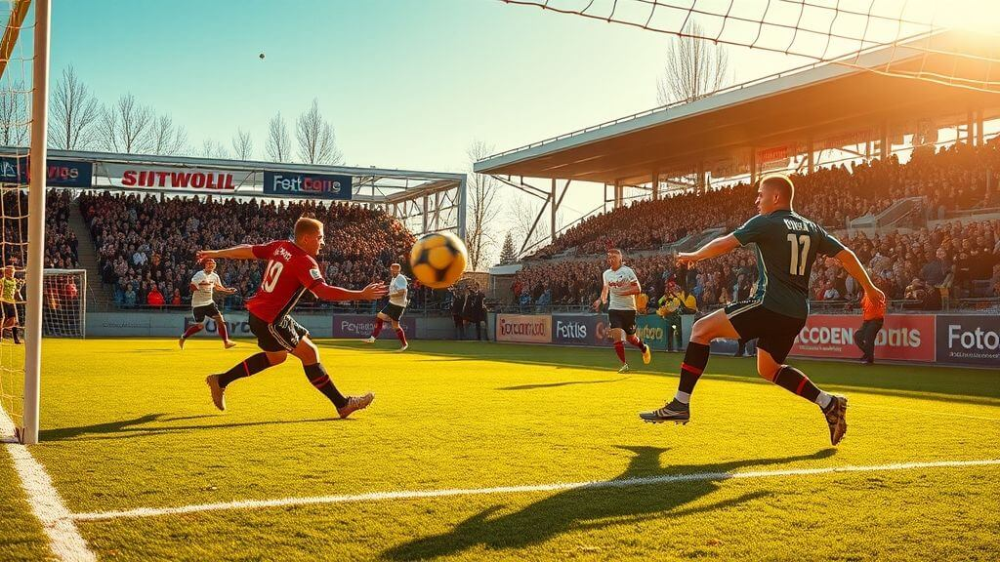
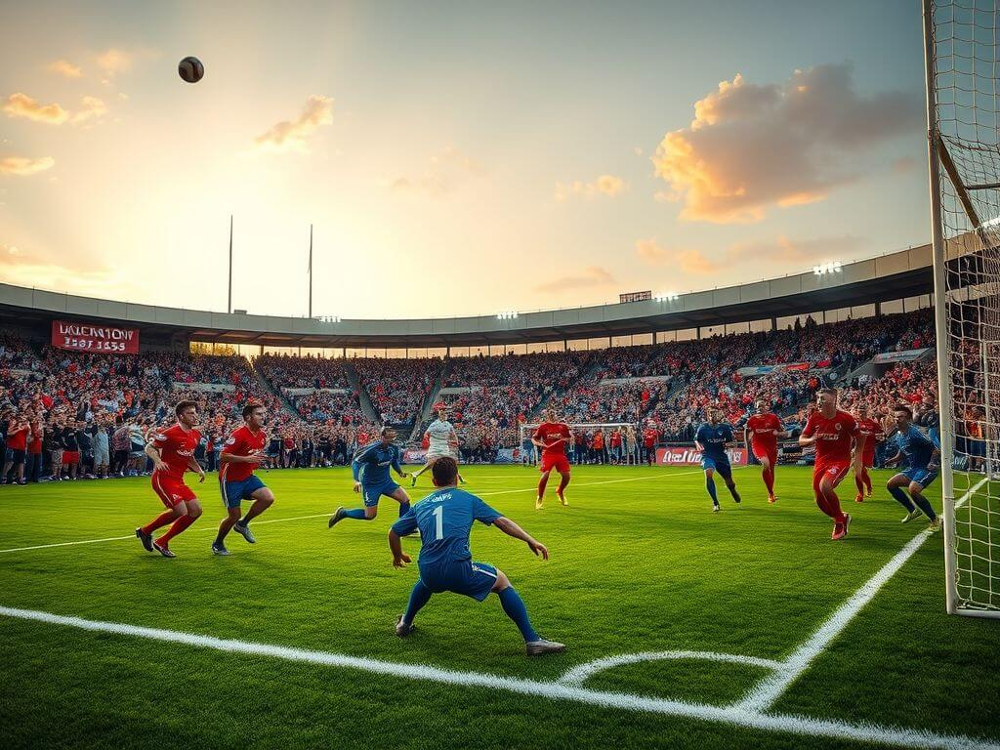
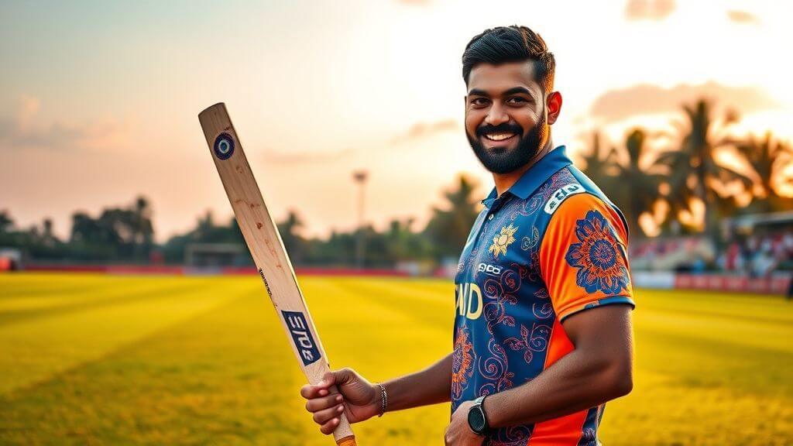
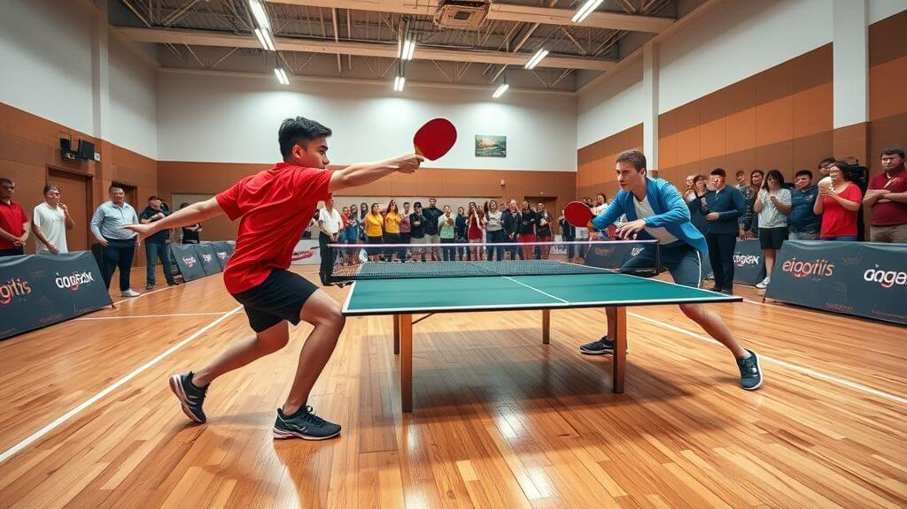
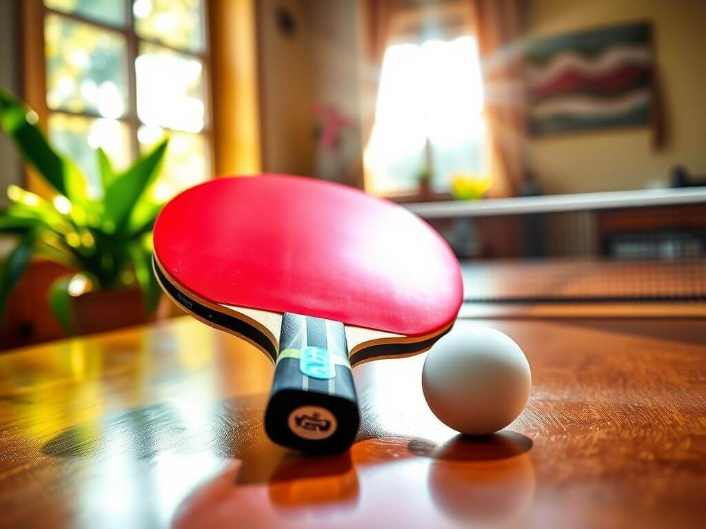

Our Blog
Discover the newest trends, professional advice, and successful tactics in the ever-evolving realm of fantasy sports. Our blog is full with insightful information to help you build unstoppable teams, make better decisions, and remain ahead of the competition, regardless of your level of experience. Explore our articles to step up your fantasy sports experience!
Mastering Fantasy Basketball
Fantasy basketball combines strategic thinking with a love for the game. Discover how to build your dream team and compete like a pro.
Mastering Fantasy Basketball
Fantasy basketball offers fans a unique way to engage with the sport, blending statistical analysis, strategy, and an understanding of the game. It’s not just about picking the most popular players—true success lies in carefully crafting a roster that balances star power, consistency, and potential upside.
To build a competitive fantasy basketball team, start by understanding the scoring system of your league. Points, rebounds, assists, steals, and blocks are commonly rewarded, but turnovers may deduct points. Familiarize yourself with these rules and prioritize players who excel across multiple categories.
Draft day is a pivotal moment in fantasy basketball. Research player rankings, consider injury histories, and stay informed about preseason performances. While superstars like Nikola Jokić or Giannis Antetokounmpo might be tempting first picks, don’t overlook mid-tier players who can deliver consistent value.
Once the season starts, your job as a fantasy manager is far from over. Monitor player performances and keep an eye on the waiver wire for emerging talent. Injuries, trades, and coaching changes can significantly impact a player’s value, so adaptability is key to staying ahead of the competition.
Fantasy basketball also rewards those who think ahead. Anticipate trends in player usage, study matchups, and identify "sleepers"—under-the-radar players poised to have breakout seasons. Leverage advanced statistics like Player Efficiency Rating (PER) and Usage Rate to gain an edge.
Whether you’re competing in a casual league with friends or a high-stakes tournament, fantasy basketball is a game of both knowledge and intuition. Dive into the action and experience the thrill of managing your dream team, making every NBA game even more exciting to watch!
The Evolution of Modern Football
Football has transformed from a simple pastime into a global phenomenon. Explore the key milestones that shaped the modern game.
The Evolution of Modern Football
Football, or soccer as it’s known in some parts of the world, has a rich history dating back centuries. What began as a rudimentary game played on village greens has grown into a multi-billion-dollar global industry. Its evolution reflects changes in society, technology, and culture.
The establishment of standardized rules by the Football Association in 1863 was a turning point for the sport. These regulations laid the groundwork for organized competitions, including the iconic FA Cup, which remains one of football’s most prestigious tournaments.
Innovations like the introduction of professional leagues, televised matches, and advanced training techniques have further elevated the game. Today, clubs like Real Madrid, Manchester United, and Barcelona have become cultural symbols, boasting millions of fans worldwide.
Technological advancements such as VAR (Video Assistant Referee) have added a layer of precision to officiating, though not without controversy. These changes illustrate the sport’s constant drive for improvement while maintaining its core essence—a love for the beautiful game.
Football’s influence extends beyond the pitch. It unites communities, bridges cultural divides, and inspires millions. Whether it’s a local derby or the FIFA World Cup final, football continues to capture hearts and ignite passions like no other sport.
Cricket: The Gentleman’s Game with a Modern Twist
Cricket has evolved from a traditional sport to a global sensation. Explore how its rich history blends with modern innovations to keep fans captivated.
Cricket: The Gentleman’s Game with a Modern Twist
Cricket, often called the gentleman's game, has a history that dates back centuries. Originating in England, it has grown into a sport loved by millions worldwide. From test matches that span five days to the high-octane T20 leagues, cricket continues to evolve while staying true to its roots.
One of cricket's most fascinating aspects is its diversity of formats. Test cricket, with its emphasis on patience and strategy, is often considered the purest form of the game. In contrast, T20 cricket offers fast-paced action and explosive performances that appeal to modern audiences.

Another key factor in cricket’s enduring popularity is its ability to adapt. Innovations like the Decision Review System (DRS) and the introduction of colorful uniforms and night matches have made the game more engaging for fans. Franchise leagues like the IPL and Big Bash have also brought star players together, creating a global cricketing spectacle.
Cricket is more than just a sport—it’s a way of life for many. Whether it's the electrifying atmosphere of a packed stadium, the intricate strategies of captains, or the unforgettable moments created by legendary players, cricket has a unique charm that transcends borders and cultures.
Whether you're new to the game or a lifelong fan, cricket offers something for everyone. It’s a celebration of skill, teamwork, and the shared love for a game that has stood the test of time. So grab your bat, ball, or just a comfy seat, and dive into the world of cricket!
The Science Behind Marathon Running
Marathon running pushes human limits. Discover the physical and mental endurance required to conquer 42.2 kilometers.
The Science Behind Marathon Running
Marathon running is one of the ultimate tests of human endurance and resilience. Covering 42.2 kilometers demands not only peak physical fitness but also immense mental fortitude. Let’s explore the science that underpins this remarkable feat.
Training for a marathon begins months in advance. Runners gradually increase their mileage to build endurance, focusing on both aerobic and anaerobic capacity. Long runs, speed work, and recovery days are all part of a carefully structured training plan.
Nutrition plays a crucial role in marathon preparation. Carbohydrate loading before race day ensures glycogen stores are maximized, providing the energy needed to sustain prolonged activity. Hydration is equally critical, as even slight dehydration can significantly impair performance.
During the race, the body undergoes significant stress. Heart rates increase, muscles endure repetitive strain, and energy reserves deplete. This is where mental strength comes into play. Runners often rely on visualization techniques and positive self-talk to push through the infamous "wall"—a point of extreme fatigue around the 30-kilometer mark.
Despite the challenges, completing a marathon is a life-changing achievement. It showcases the incredible capabilities of the human body and mind, inspiring runners and spectators alike. Whether you're aiming for a personal best or simply crossing the finish line, the marathon is a testament to the power of perseverance.
The Hidden Strategy in Table Tennis
Table tennis is more than fast reflexes—it's a mental game of strategy. Discover the hidden tactics that separate amateurs from champions.
The Hidden Strategy in Table Tennis
At first glance, table tennis may seem like a game of pure speed and reflexes. However, beneath its fast-paced rallies lies a world of strategy and mental acuity that often goes unnoticed. It’s this blend of physical skill and tactical planning that makes the game so captivating.
One of the key elements in table tennis is spin. Players use a variety of spins—topspin, backspin, and sidespin—to control the ball's trajectory and confuse their opponent. Mastering spin manipulation can turn a simple shot into a devastating weapon.
Another crucial aspect is placement. Instead of hitting the ball as hard as possible, skilled players aim for specific areas of the table to exploit their opponent’s weaknesses. This often involves targeting the corners, playing to the middle to disrupt footwork, or capitalizing on an opponent’s weaker side.
Mental endurance is also vital. Table tennis matches are fast and intense, requiring players to adapt quickly to their opponent’s tactics. Remaining calm under pressure and staying one step ahead can make the difference between victory and defeat.
Whether you're a casual player or aspiring champion, understanding the strategic depth of table tennis opens up new layers of appreciation for the sport. Next time you step to the table, remember—it’s not just about the speed; it’s about outsmarting your opponent.
Ultimate Frisbee: The Spirit of the Game
Ultimate Frisbee combines athleticism with sportsmanship. Learn why it's one of the most unique and rapidly growing sports in the world.
Ultimate Frisbee: The Spirit of the Game
Ultimate Frisbee is a sport unlike any other. Combining the speed and skill of soccer with the agility of basketball, it offers a thrilling experience for players and spectators alike. But what truly sets Ultimate apart is its core principle: the "Spirit of the Game."
Played without referees, Ultimate relies on players to self-officiate and maintain the integrity of the game. This emphasis on honesty, respect, and fair play creates a unique atmosphere where competition and camaraderie coexist.
The game itself is a showcase of athleticism and strategy. Teams of seven players work together to pass the disc down the field and score in the opposing end zone. Precision throws, quick cuts, and spectacular diving catches are all part of the action.
Ultimate Frisbee is also remarkably inclusive. With mixed-gender teams and a welcoming community, it’s a sport where everyone can find their place. This inclusivity has contributed to its rapid growth, with leagues and tournaments popping up around the world.
Whether you’re looking for a competitive challenge or a fun way to stay active, Ultimate Frisbee offers something for everyone. It’s more than just a sport—it’s a celebration of teamwork, respect, and the joy of play.
Looking for help?
Have questions or need support? Reach out to us anytime, and our team will be happy to help you!
Contact Us